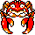
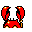

#098
Krabby
Water
Its pincers are not only powerful weapons, they are used for balance when walking sideways
Base stats Total 330
HP50
Attack85
Defense90
Speed50
Special55
Evolution
Pokédex data
- Species
- River Crab Pokémon
- Height
- 1'04"
- Weight
- 14.0 lb
- Catch rate
- 225 / 255
- Base experience
- 115
- Growth rate
- Medium Fast
Level-up moves 9
LevelMoveTypePowerAcc.PP
TM / HM moves 20
TM / HMMoveTypePowerAcc.PP
Wild locations
Any fishable waterOld RodLv 5